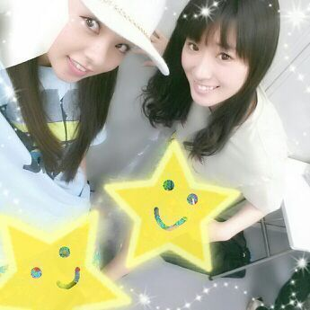
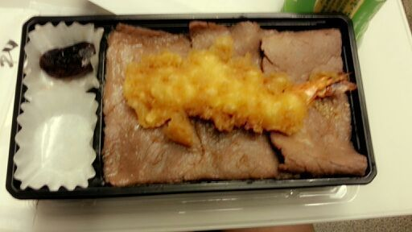

| 2013/07 30 Tue | 川村真洋 今日は、25時29分から NOGIBINGO★見てね=・▼・ = ろってぃ- |
こんにちわぁ〜＼(^o^)／
かずみとやでん♪

おそろっちの lesson着。
お揃いだから余計 お気に入りだ(〃∨〃)/
ぢゃん ！！

焼肉弁当の上に エビ...★
え( ; ゜■゜) 天丼か 笑？
新幹線で食べた晩ごはん・・・
かずみの天丼にエビが２本！！！
天丼 か 焼肉丼で迷ってた私に
エビを１本、
『ひょいっ)))』と わけてくれました。
２つも食べれないからあげるよ(*^^*)
って...
本当 優すうぃーな。 かん！！！
(かん イコール かずみね ／)
どんどんニックネームが
増えていきますが
どーにか頑張って
ついてきてください(о´∀`о)
皆 いぇいっ！(ハイタッチ☆☆☆)
それと こないだ皆に聞いた
「毎週見てる番組って何ですかー☆？」
のやつ、
皆 どんな番組見てるか
教えてくれてありがとぉー＼(^o^)／
なるへそぉ〜
なんか皆がそれぞれ
何見てるかとかコメント見てて
楽しかったです/
まひろはねぇ *
日)行列のできる法律相談所・乃木どこ？
月)SUMMER NUDE(ドラマ)・
しゃべくり007・月曜から夜ふかし
火)踊る！さんま御殿！！
・ロンドンハーツ・NOGIBINGO
水)ホンマでっか!?TV・Woman(ドラマ)
・マツコ&有吉の怒り新党
木)NARUTO・アメトーク
金)Mステ・金曜ロードshow！
土)なし
だよお！！
結構あるでしょ\( ´∀｀*\)
夜仕事から帰ってきて
お風呂も上がってさっぱりした後に
見る時間が まひろの生活の
楽しみです(^ω^)
それと、朝すごく早く起きて
見るのも好き♪
時間が足りない時は
いつも1,5倍速でねっ、、、笑 ))
バラエティー番組大好きです(・ω・)
ではでは
質問返しの方 してゆきまとぅ。
☆歌ってくれるのは最後の人だけ？
★んなわけないよん.
最後の人だけじゃないですよん(*^^*)
☆曲は何でもOK？
★うんっ,でも まひろ絶対知らんやろ!!
ってのは辞めてよ ^^笑
☆野球好き？
★好きだよぉ〜♪
でも 詳しくはないです(*∨*)/
☆握手会で 歌って踊ってくれるのは
ろちこさんだけですか？
★ひめかが1回してたのは
聞いたことあるよ〜ん )))
でもやったことあるのは
まひろとひめか位です(´ω`)
よろちく♪
☆握手会、受験に合格してからでも
いいかな？
★うんっ、待ってるから
本当応援しめるからファイトだよ！！
自分に負けないでね(*^^*)
☆横浜の私服どこの服〜(〃ω〃)？
★Ank Rouge ってとこの洋服だよ♪
自分も ここでは初めて買ったかもしれない(^▽^)/
☆Rotty夢の方って優しいですか？
★ヤバイよ〜 Rotty夢の皆は
本当温かい人間が集合してるよん
\(*´∨`*)/はは〜
元気な人も多いよ〜。
☆少し遠い秋田からのエアー握手と
おめでとうコール届いたかな？
★もちろん。届いた。
サンキュー。わ〜。あは
☆あまちゃんって少し愛未ちゃんに
似てと思わない？
★分かるよ〜 そう思う感じぃー。
確かに少し似てる♪
☆握手会、足大丈夫だった？
★電車で二時間 立ちっぱだったから
握手会する前から痛くなっちゃったんだよ〜(´；ω；｀)
でも 全然大丈夫！！
心配ありがとうございます！
☆バラは好き？
レッドローズとスノーホワイト
どっちが好き？
★バラも好きです/
どっちだろうなぁ〜 )))
どっちも好きだけど-んー 難ちぃ(>_<)
強いて言うならば
意外と ホワイトかもしれない。
今日はここまでです( 〃▽〃)
すぃ-ゆ〜( 〃▽〃)のし
ろってぃ-でしたん。